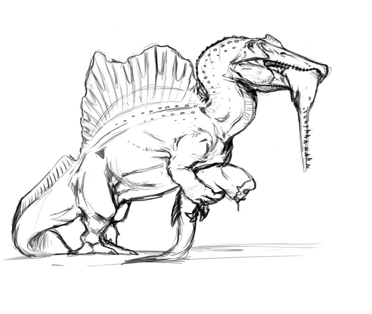
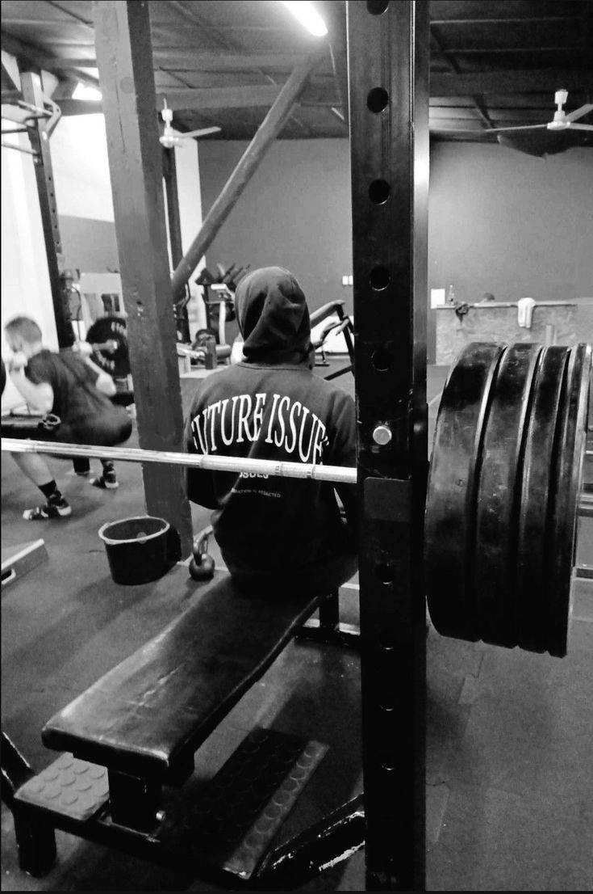
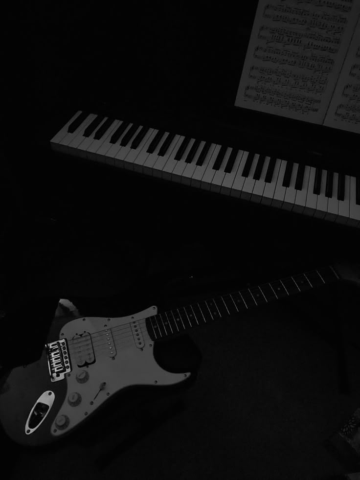

About Me
During a normal day, I will be doing some of my favorite hobbies.
Hobbies
- Drawing
I've been drawing as long as I can remember. Started with drawing dinosaurs and monsters to drawing people, anime, etc. Being able to connect lines and create your images from your mind onto paper is absolutely amazing to me and it's something I'll always cheris doing.
- Exercise
Being fit is something i always plan on doing. Seeing the progress I have made and noticing how much I have improved is motivating and reminds me that I can do anything I set my mind to.
- Music
Although I haven't done it that much, I always wanted to play instruments and play all the songs I love. More specifiacally on the piano because it is such a beautiful thing to listen to.
